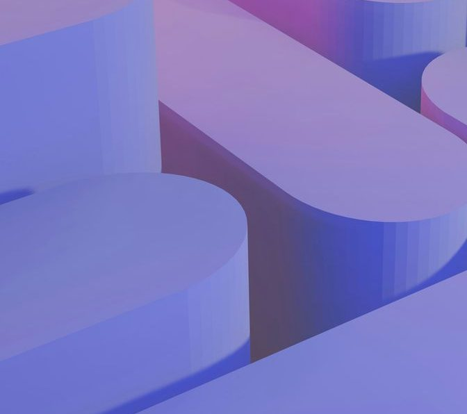
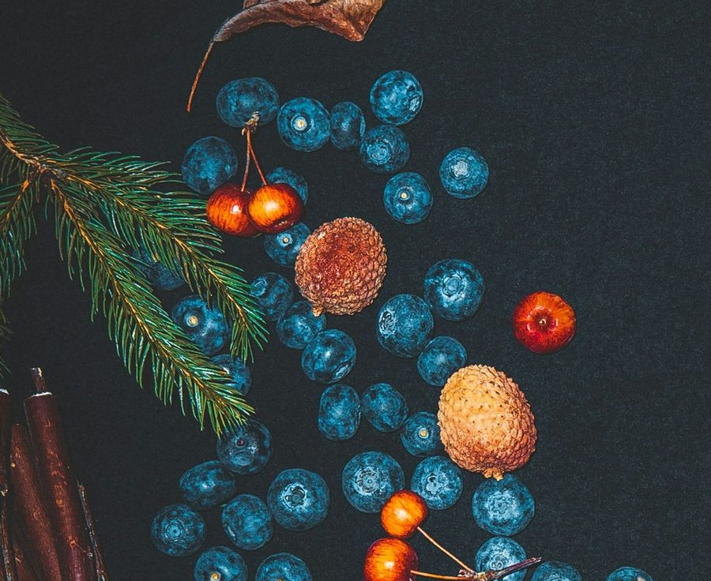
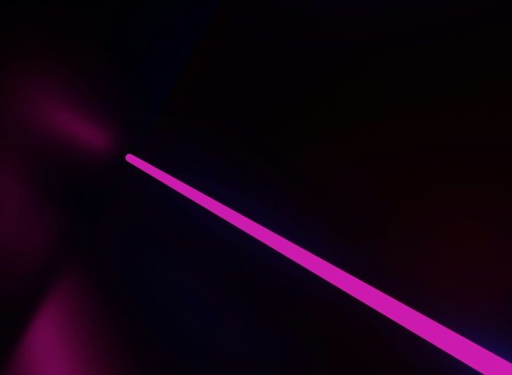

Education HorizonsWeb · SEO
Component lab · 01 / Media
One body of work, presented five different ways. Every one of them is drag-aware, keyboard operable, sleeps when it leaves the screen, and repaints on both theme axes without a rule of its own. Pick the one that fits the story — not the one that fits the grid.
Media 01 · Orbital carousel
Tiles are placed by the golden-angle spiral, the only distribution that stays even at any count. Drag to turn it on both axes, throw it and it carries, tab through it and each tile rotates itself to the front.
Media 02 · Cylinder carousel
One axis instead of two, and a detent. The release snaps to the nearest facet, so the drum always comes to rest square to the reader rather than stopping wherever the throw ran out.
Education HorizonsWeb · SEO
Ridge lineField

MePACSConversion
Timber lineField

RTOPilotPlatform

SignalStudy
-p-800.png)
AirpinBooking

FormsRender
-p-800.png)
Desert to CoastTourism

BotanicalField
Media 03 · MotionFlow rail
Velocity is the only input. It drives position, skew, vertical stretch and the parallax of each photograph inside its frame — one number producing the whole gesture rather than four animations trying to agree.





VelocityDrag or scroll sideways
Media 04 · Slice slider
Both frames move the same way at the same time, one beat apart per column. The two interleave rather than crossfade, which is what makes the change read as a mechanism instead of an effect.
Media 05 · Scroll gallery
Five columns climbing at different rates while one plate scales out of the grid and takes the screen. Every part reads the same scrubbed value, so they cannot fall out of step — and it runs backwards as cleanly as forwards.
Laid out at the size it ends at and scaled down rather than up — which is the difference between a reveal that sharpens as it arrives and one that softens.
Keep going
The card page takes the same approach to a different problem: how to give six things equal weight without a grid of six identical boxes.

-p-500.png)

-p-500.png)